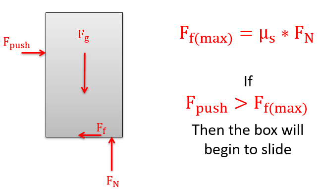
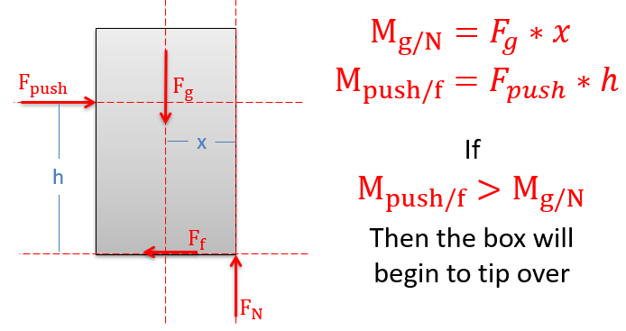

Section 9.3 Slipping vs. Tipping
Key Questions
- Interpret all the ways that a system could reach impending motion and create free-body diagrams for each scenario
- Select a criterion which you can compare across motion scenarios
- Compare your results to conclude which scenario would reach impending motion first
Thinking Deeper 9.3.1. Failure in Engineering.
The goal of engineering design is to forecast and plan for all the ways that something can fail. The challenge is to know the questions to ask and the data to gather to model all possible failure modes. The controlling failure is the mode which occurs at the smallest load.
This section focuses on the various ways a rigid body in equilibrium might begin to move. The point at which an object starts to move is called the point of impending motion.
The interactive in Figure 9.3.2 shows a box sitting on a rough surface. Imagine that we start pushing on the side of the box with a gradually increasing force. Initially, friction between the block and the incline will increase to maintain equilibrium, and the box will sit still.
As we continue to increase the force there are two possibilities; the maximum static friction force will be reached and the box will begin to slide, or the pushing force and the friction force will create a sufficient couple to cause the box tip on its corner.
One of the most straightforward ways to determine how the box will move is to solve for the pushing force twice, once assuming slipping and a second time expecting tipping. Whichever iteration requires the least pushing force is the option that will cause the box to move. This process is summarized in the following three steps:
This process is summarized in the following three steps:
-
Check slipping.
Create an FBD with the normal force \(N\) at some unknown location and solve for the pushing force necessary to make the body slip.
Figure 9.3.3. A body will slide across a surface if the pushing force exceeds the maximum static friction force that can exist between the two surfaces in contact. As in all dry friction problems, this limit to the friction force is equal to the static coefficient of friction times the normal force between the body (\(F=\mu_\text{s} N\)). Given the scenario below of a box on a horizontal surface, if the pushing force exceeds the maximum force of friction, then the body will slip. -
Check tipping.
Create an FBD with the normal force \(N\) at the corner of the box and solve for the pushing force necessary to make the body tip.
Figure 9.3.4. Given the box on a rough horizontal surface above, as we push horizontally on the body, the resultant normal force (as discussed above in section XX) will shift to the right. Because the normal force is the direct result of physical contact, we cannot move the normal force beyond the corner of the box. At tipping, the friction force is static-but-not-impending as it has not reached impending motion for slipping. -
Compare the results.
In this case, the least value of \(F_\text{push}\) will initiate impending motion.